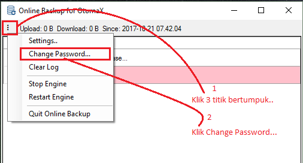
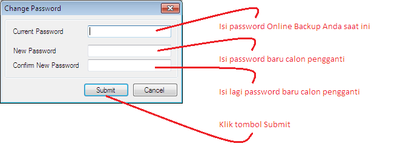
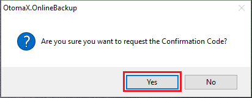
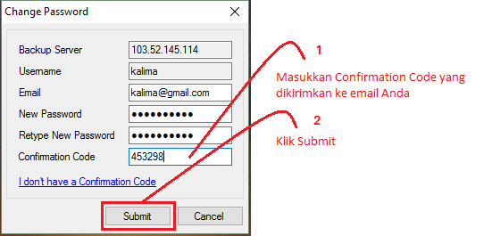

Ubah Password Online Backup
Di saat tertentu mungkin Anda perlu mengubah password akun Online Backup, berikut langkah - langkahnya:
- Pastikan Anda telah mendaftar layanan Online Backup. Kalau belum, dapat mendaftar dahulu klik disini.
- Jalankan modul Online Backup.
-
Klik 3 tanda titik bertumpuk di sisi kiri atas pada modul -> klik Change Password, perhatikan gambar di bawah ini.

-
Akan muncul jendela Change Password, lakukan sesuai petunjuk di gambar bawah ini.

-
Akan muncul pop up konfirmasi seperti di bawah ini dan klik Yes:

-
Cek email Anda untuk mendapatkan Confirmation Code, kemudian lakukan sesuai petunjuk di gambar bawah ini dan klik Yes.

- Selesai.
Selanjutnya klik 3 tanda titik bertumpuk -> klik Settings.. -> pada box: Password isi dengan password baru Anda dan klik OK. Online Backup akan bekerja kembali.